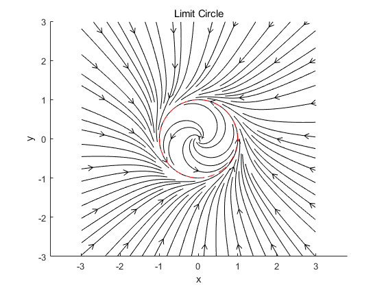
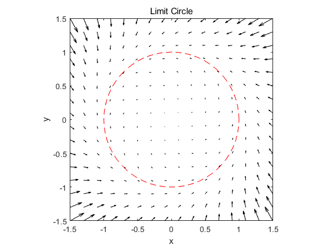

在极坐标下容易想到，使半径收敛到常数 $R$ 即可
其中 $R,\omega$ 为极限环的半径和角速度
转化成直角坐标：
即
不妨令 $R=1,\omega=1$，用 matlab 画相图如下：1
2
3
4
5
6
7
8
9
10
11
12clc;clear;close;
[x,y]=meshgrid(linspace(-3,3));
h=streamslice(x,y, -y-x.*(x.^2+y.^2-1), x -y.*(x.^2+y.^2-1));
title('Limit Circle')
xlabel('x');ylabel('y');
xlim([-3,3]);ylim([-3,3]);
set(h,'Color','k')
axis equal
hold on
theta=0:pi/30:2*pi;
x1=cos(theta);y1=sin(theta);
plot(x1,y1,'r--')
1
2
3
4
5
6
7
8
9
10
11
12
13
14clc;clear;close;
[x,y]=meshgrid(-1.5:0.2:1.5,-1.5:0.2:1.5);
u=-y-x.*(x.^2+y.^2-1);
v=x-y.*(x.^2+y.^2-1);
hadl=quiver(x,y,u,v)
title('Limit Circle')
set(hadl,'Color','k')
axis equal
xlabel('x');ylabel('y');
xlim([-1.5,1.5]);ylim([-1.5,1.5]);
hold on
theta=0:pi/30:2*pi;
x1=cos(theta);y1=sin(theta);
plot(x1,y1,'r--')
